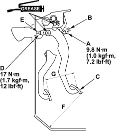

NOTE:
- To check the clutch pedal position switch, refer to the 2001 Civic Shop Manual (see page 4-49).
- Remove the driver's side floor mat before adjusting the clutch pedal.
- The clutch is self-adjusting to compensate for wear.
- If there is no clearance between the master cylinder piston and push rod, the release bearing will be held against the diaphragm spring, which can result in clutch slippage or other clutch problems.
- Loosen locknut (A), and back off the clutch pedal position switch (B) (or adjusting bolt) until it no longer touches the clutch pedal (C).
NOTE: RHD type is shown, LHD type is similar.

- Loosen locknut (D), and turn the push rod (E) in or out to get the specified height (F) and stroke (G) at the clutch pedal.
Clutch Pedal Stroke:
130 - 140 mm (5.1 - 5.5 in.)
Clutch Pedal Height:
200 mm (7.87 in.)
- Tighten locknut (D).
- With the clutch pedal released, turn the clutch pedal position switch (B) in until it contacts the clutch pedal (C).

- Turn the clutch pedal position switch (B) in an additional 3/4 to 1 turn.
- Tighten locknut (A).